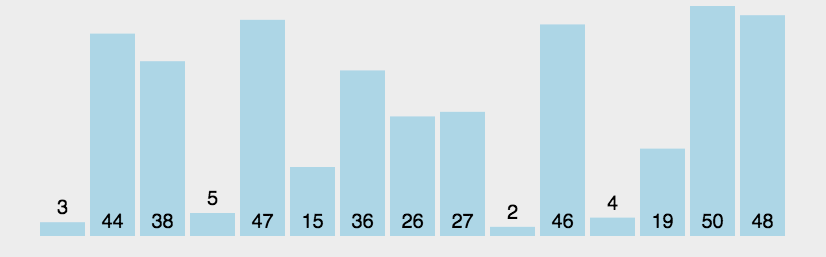
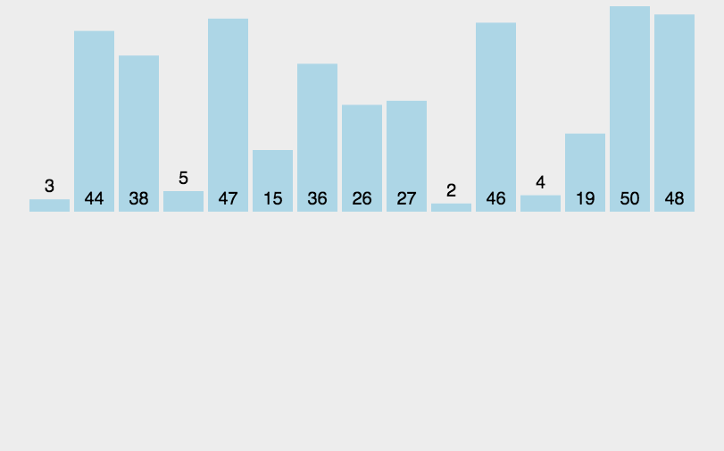
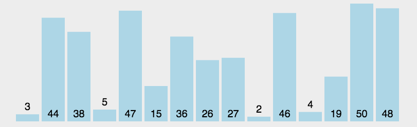
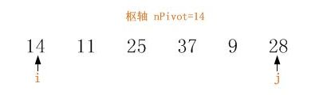
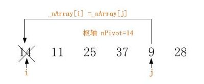
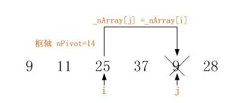
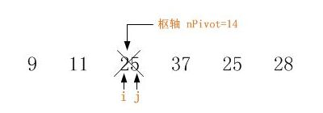
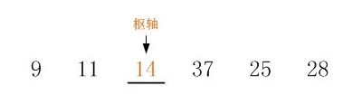
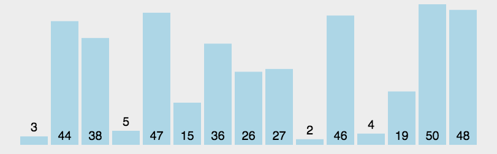

面试以及考试过程中必会出现一道排序算法面试题，为了加深对排序算法的理解，在此我对各种排序算法做个总结归纳。
（1）比较相邻的元素。如果第一个比第二个大，就交换他们两个。
（2）对每一对相邻元素做同样的工作，从开始第一对到结尾的最后一对。在这一点，最后的元素应该会是最大的数。
（3）针对所有的元素重复以上的步骤，除了最后一个。
（4）持续每次对越来越少的元素重复上面的步骤，直到没有任何一对数字需要比较。
最好时间复杂度O（n） 最坏时间复杂度O（n2）

public Class SortDemo
{
public void BubbleSort(int[] arr)
{
int temp=0;
//需要走arr.Length-1 趟
for(int i=0;i<arr.Length-1;i++)
{
//每一趟需要比较次数
for(int j=0,j<arr.Length-i-1;j++)
{
//升序排序
if(arr[j]>arr[j+1])
{
temp=arr[j];//将较大的变量保存在临时变量
arr[j]=arr[j+1]；
arr[j+1]=temp;
}
}
}
}
}
（1）从第一个元素开始，该元素可以认为已经被排序；
（2）取出下一个元素，在已经排序的元素序列中从后向前扫描；
（3）如果该元素（已排序）大于新元素，将该元素移到下一位置；
（4）重复步骤3，直到找到已排序的元素小于或者等于新元素的位置；
（5） 将新元素插入到该位置后；
（6）重复步骤2~5。

public Class SortDemo
{
public void InsertionSort(int[] arr)
{
int temp=0;
//遍历待插入的数(从第二位开始)
for(int i=1;i<arr.Length;i++)
{ temp=arr[i];//待插入的数 int j=i-1;//（j为已排序的待插入的位置序号）
//若已排序的数大于待插入数，则往后移一位
while(j>=0&&arr[j]>temp)
{
arr[j+1]=arr[j];
j--;
}
arr[j+1]=temp;//将待插入的数放入插入位置
}
}
}选择排序(Selection-sort)是一种简单直观的排序算法。它的工作原理：首先在未排序序列中找到最小（大）元素，存放到排序序列的起始位置，然后，再从剩余未排序元素中继续寻找最小（大）元素，然后放到已排序序列的末尾。以此类推，直到所有元素均排序完毕。
（1）初始状态：无序区为R[1..n]，有序区为空；
（2）第i趟排序(i=1,2,3…n-1)开始时，当前有序区和无序区分别为R[1..i-1]和R(i..n）。该趟排序从当前无序区中-选出关键字最小的记录 R[k]，将它与无序区的第1个记录R交换，使R[1..i]和R[i+1..n)分别变为记录个数增加1个的新有序区和记录个数减少1个的新无序区；
（3）n-1趟结束，数组有序化了。

public void SelectionSort(int[] arr)
{
int temp;
for(int i=0;i<arr.Length-1;i++)
{
int minVal=arr[i];
int minIndex=i;
for(int j=i+1;j<arr.Length;j++)
{
if(minVal>arr[j])
{
minVal=arr[j];
minIndex=j;
}
}
temp=arr[i];
arr[i]=minVal;
arr[minIndex]=temp;
}
}
}（1）从数列中挑出一个元素，称为 “基准”（pivot）；
（2）重新排序数列，所有元素比基准值小的摆放在基准前面，所有元素比基准值大的摆在基准的后面（相同的数可以到任一边）。在这个分区退出之后，该基准就处于数列的中间位置。这个称为分区（partition）操作；
（3）递归地（recursive）把小于基准值元素的子数列和大于基准值元素的子数列排序。
快速排序法是采用递归的方式对待排序的数列进行若干次的操作,每次操作使得被操作的数列部分以某个元素为分界值分成两部分,一部分小于该分界值,另一部分大于该分界值.该分界值一般被称为"枢轴". 一般先以左边第一个数作为分界值，将数列按该分界值分成左右两 部分，左边部分小于该分界值，右边部分大于该分界值，然后再对左右两部分做重复的操作，直到最后完成排序。
以数列 14,11,25,37,9,28 为例,详细描述执行一趟快速排序的算法:
1,选择待排序数列的枢轴,一般以数列的首元素作为枢轴.此数列中,我们选择首元素14作为枢轴,nPivot = 14.
2,设定两个指针 i 和 j ,分别指向数列的首元素和尾元素. i 指向首元素14, j 指向尾元素28.示意图如下:

3,向前移动尾指针 j ,使其指向从数列尾部算起首个小于枢轴(即14)的元素,并将该元素置换到头指针 i 指向的位置._nArray[i] =_nArray[j].示意图如下:

首次执行该操作时 i 指针指向处的值实际上就是枢轴的值,此处的操作可以理解为 i 指针指向处的值已在之前被置换到枢轴中,此时, i 指向处已经是一个空位,在此时用找到的小于枢轴的元素填在此处.
4,向后移动头指针 i ,使其指向从数列头部算起首个大于枢轴(即14)的元素,并将该元素置换到尾指针 j 指向的位置._nArray[j] =_nArray[i].示意图如下:

此处同样可以理解为 j 指针指向处的值已在上一步操作中置换了出去. j 处已是一个空位.
5,如此重复执行步骤3和步骤4,直至 i==j 时结束该循环.
6,退出了该循环后, i 与 j 必定指向同一位置.在该位置的前部元素,其值均小于枢轴.而在该位置的后部元素,其值均大于枢轴.显而易见,此时 i 和 j 同时指向的位置就应该是枢轴的"新家"._nArray[i]=nPivot.如下图:

至此,一趟排序结束.待排序数列的首元素将该数列分成了比其小和比其大的两部分.如下图:

接着,我们对这一大一小两部分子数列执行相同的排序操作.
如此"递归",直至对整个数列完成排序操作.

/// <summary>
/// 排序
/// </summary>
/// <param name="array">要排序的数组</param>
/// <param name="low">下标开始位置，向右查找</param>
/// <param name="high">下标开始位置，向左查找</param>
public static void Sort(int[] array, int low, int high)
{
if (low >= high)
return;
//完成一次单元排序
int index = SortUnit(array, low, high);
//递归调用，对左边部分的数组进行单元排序
Sort(array, low, index - 1);
//递归调用，对右边部分的数组进行单元排序
Sort(array, index + 1, high);
}
/// <summary>
/// 单元排序
/// </summary>
/// <param name="array">要排序的数组</param>
/// <param name="low">下标开始位置，向右查找</param>
/// <param name="high">下标开始位置，向右查找</param>
/// <returns>每次单元排序的停止下标</returns>
public static int SortUnit(int[] array, int low, int high)
{
int key = array[low];//基准数
while (low < high)
{
//从high往前找小于或等于key的值
while (low < high && array[high] > key)
high--;
//比key小开等的放左边
array[low] = array[high];
//从low往后找大于key的值
while (low < high && array[low] <= key)
low++;
//比key大的放右边
array[high] = array[low];
}
//结束循环时，此时low等于high，左边都小于或等于key，右边都大于key。将key放在游标当前位置。
array[low] = key;
return high;
}
文章参考摘自：https://www.cnblogs.com/yundan/p/4022056.html https://www.cnblogs.com/geduocoding/p/7097870.html